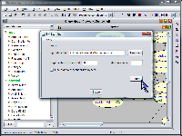

SamIam's EM Learning tool allows the belief engineer to learn the conditional probabilities in a network based on data, using the Expectation Maximization (EM) algorithm . The data must be in the form of a Hugin "case file," each line of which represents one instantiation of the variables in the network.
The first step in using the EM Learning tool is to design a network structure that includes a node for every variable mentioned in the case file. Also, you must define state names that correspond to the state names mentioned in the case file. Generally, you will initialize the network with uniform probability distributions over each variable.
Next, open the EM Learning tool by selecting its menu item from the "Query" menu or clicking the "EM" button on the tool bar. In the EM Learning dialog window, use the "Browse" button to select the Hugin format case file you would like to use. You may also choose to modify the default values for the convergence threshold and the maximum number of iterations. When you have chosen acceptable parameters, click "OK" to run the EM algorithm. SamIam will make a copy of the open network and learn the CPT parameters based on the case file you selected.
SamIam 2.2 also provides the function of generating simulated case files. A simulated case file is a Hugin format case file generated artificially from a Bayesian network for which the user has already defined conditional probabilities. To simulate data, select "Generate Simulated Cases" from the "Tools" menu. You can choose the number of cases to write to the file and the percentage of the data SamIam will destroy at random.
|  |